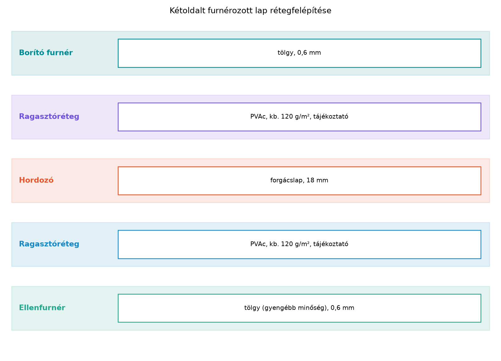

Egy asztalosműhelyben konyhaajtó-frontokat gyártanak. A vevő tölgy furnérral borított, 18 mm vastag forgácslapból készült ajtót rendel. A munkadarabra egyoldalasan ragasztják fel a tölgy furnért, mert „úgysem látszik a másik oldala”. Néhány nap múlva az elkészült ajtólap meggörbül, a széle felpöndörödik, a felületén repedések jelennek meg. A vevő reklamál. A hibát az okozta, hogy a furnérozott lap rétegei nem voltak szimmetrikusak: a felső furnér a nedvességváltozásra zsugorodott, a hátoldal üres maradt, így a lap meghajlott. Ezért kell alaposan ismerni a furnérozás technológiáját, a kétoldali borítás szerepét, a préselés paramétereit és a préselés utáni műveleteket.
A furnérozott lap rétegeit az alábbi rétegfelépítés mutatja. A középső forgácslap a hordozó, erre mindkét oldalt ragasztóréteg, majd furnér kerül. A felső, látható furnér a borító furnér, az alsó, nem látható furnér az ellenfurnér. Az ellenfurnér kiegyensúlyozza a felső furnér nedvesség okozta méretváltozását.

Definíció. Furnérozásnak nevezzük azt a felületborítási eljárást, amikor vékony falemezeket (furnérokat) ragasztunk egy hordozóra, például forgácslapra, MDF-re vagy rétegelt lemezre. A ragasztás történhet sík lapra vagy íves felületre.
Definíció. Borító furnérnak nevezzük a késztermék látható oldalára kerülő, esztétikailag értékes, megfelelő mintázatú furnért. Ellenfurnérnak nevezzük a hátoldalra kerülő, nem látható, kiegyensúlyozó szerepű furnért.
Szabály. Kétoldali borítás és szimmetria. A furnérozott lapot mindig két oldalról kell furnérozni. Az ellenfurnért úgy kell megválasztani, hogy zsugorodási-dagadási tulajdonsága és vastagsága közel azonos legyen a borító furnérral. Ellenkező esetben a nedvességváltozás során a két oldal eltérően mozog, a lap meggörbül, vetemedik, és a felületén repedések keletkezhetnek.
Szabvány. Ragasztók osztályozása vízállóság szerint. A furnérozáshoz használt ragasztók vízállósági osztálya az MSZ EN 204 szerint D1–D4 (ellenőrizendő: a szabvány pontos hivatkozása). Beltéri bútorlapokhoz legalább D2, nedves helyiségbe D3 vagy D4 osztályú ragasztót választunk. A pontos választást a gyártói adatlap és a termék rendeltetése határozza meg.
A furnérozás minősége elsősorban a ragasztóanyag megfelelő előkészítésén és egyenletes felhordásán múlik. A leggyakoribb ragasztóanyagok:
Eljárás. Ragasztóanyag előkészítése PVAc ragasztó esetén.
A furnérozott lapot hidraulikus hőprésben préseljük. A préselés három fő paramétere:
Szabály. A préselési paraméterek beállítása. A pontos hőmérséklet, nyomás és idő beállítása a ragasztóanyag műszaki adatlapján és a présgépkönyvben található. A könyvben megadott értékek csak tanulási példák, ellenőrizendők.
A préselés lépései hőpréssel:
Gépbiztonság. A hőprés veszélyes üzem: égésveszély, becsípődésveszély, magas hőmérséklet és hidraulikus nyomás. A művelet betanított, felügyelt tanulónak szól; védőberendezés nélkül, egyedül, fáradtan ne végezd. Viselj hőálló kesztyűt, védőszemüveget és zárt munkaruhát. A présen legyen kétkezes indítás, vészleállító, mozgó részek elburkolva. Soha ne nyúlj a préslemezek közé, amíg a prés zárva van, és soha ne húzd ki a biztonsági berendezéseket.
A préselés után a lap még nincs kész a további megmunkálásra. A következő műveleteket kell elvégezni:
A furnérozási technológiához két gyakori számítási feladat tartozik: a préselő erő meghatározása és a ragasztóanyag-szükséglet kiszámítása.
Számítás 1. Préselő erő meghatározása. A préselő erő a fajlagos présnyomás és a préselendő felület szorzata. Képlete:
ahol a préselő erő (N), a fajlagos présnyomás (N/mm²), a préselendő felület (mm²).
Adott: egy 1200 mm × 2500 mm méretű lapot 0,7 N/mm² fajlagos nyomással préselünk. Számítsuk ki a szükséges préselő erőt.
Ellenőrzés: a hőprések jellemzően több ezer kN erőt fejtenek ki, tehát az eredmény nagyságrendje helyes. Egy 2100 kN-os préselő erőt a hidraulikus présnek biztosítania kell.
Számítás 2. Ragasztóanyag-szükséglet. A szükséges ragasztó tömegét a felhordandó mennyiség (g/m²) és a felület szorzata adja. Képlete:
ahol a ragasztó tömege (g), a fajlagos felhordás (g/m²), a ragasztandó összfelület (m²).
Adott: egy 1,2 m × 2,0 m méretű lapot kétoldalt furnérozunk. A fajlagos ragasztófelhordás (tájékoztató érték PVAc ragasztóhoz). Számítsuk ki a szükséges ragasztómennyiséget.
A ragasztandó felület két oldalra:
Ellenőrzés: 0,12 kg/m² · 4,8 m² ≈ 0,58 kg; az 576 g ennek megfelel. A mintaérték tájékoztató, a gyártói adatlapon szereplő felhordási mennyiségtől függően változhat.
Technológiai lap. Kétoldali furnérozás hidraulikus hőprésben.
Cél: 18 mm vastag forgácslap kétoldali borítása 0,6 mm vastag tölgy furnérral (borító oldal) és 0,6 mm, gyengébb minőségű (B/C) tölgy furnérral (ellenfurnér; vagy a gyártói gyakorlat szerinti, hasonló zsugorodású fafaj – ellenőrizendő).
Anyagok: forgácslap 18 mm, tölgy borító furnér 0,6 mm, tölgy ellenfurnér 0,6 mm (B/C minőség), PVAc ragasztó (D3, vízálló, tájékoztató), hátfólia, ragasztószalag az illesztésekhez.
Szerszámok, gépek: hidraulikus hőprés, ragasztófelhordó henger vagy kenőgép, élvágó, csiszológép 180-as csiszolópapírral, derékszög, mérőszalag.
Gépbiztonság. A művelet betanított, felügyelt tanulónak szól; védőberendezés nélkül, egyedül, fáradtan ne végezd. Viselj hőálló kesztyűt, védőszemüveget, zárt munkaruhát. A présen ellenőrizd a kétkezes indítást, a vészleállítót, a hőmérséklet- és nyomásjelzőt. A préslemezeket csak leállított, nyitott présnél tisztítsd, és várj, amíg lehűlnek.
Indítás előtti ellenőrzés: ragasztó adatlapjának ellenőrzése, prés hőmérsékletének ellenőrzése, présnyomás beállítás ellenőrzése, védőberendezések működése, munkadarab por- és zsírmentessége.
Lépések:
Dokumentálás: a munkanaplóban rögzítsd a préselési paramétereket, a felhasznált ragasztó típusát és mennyiségét, a préselési időt, valamint a minőségellenőrzés eredményét.
A préselés után és a préselés utáni műveletek során a következőket ellenőrizzük:
Ha bármilyen eltérést tapasztalunk, a hibát az alábbiak szerint elemezzük és javítjuk.
Hólyagosodás. Tünet: a furnér kidudorodik, kopogtatva üres hang. Okai: levegőzárvány a ragasztóban, szennyezett felület, túl kevés ragasztó, túl rövid présidő, a furnér túl nedves. Helyes gyakorlat: a felület legyen por- és zsírmentes, a ragasztófelhordás elegendő, a présidő és nyomás betartása, a furnér nedvességtartalmának ellenőrzése.
Átütés. Tünet: a ragasztó átnyomódik a furnér pórusain, a felületen fényes, sötét foltok látszanak. Okai: túl sok ragasztó, túl vékony furnér, nagy pórusú furnér, túl magas présnyomás. Helyes gyakorlat: a felhordott mennyiség csökkentése, sűrű pórusú furnér választása, a présnyomás mérséklése.
Repedés. Tünet: a furnér felülete megreped, a repedések a rostirányban futnak. Okai: a furnér túl száraz, a hordozó és a furnér nedvességkülönbsége nagy, túl gyors szárítás, a préselés után a lap gyors hűtése. Helyes gyakorlat: a furnér nedvességtartalmát a hordozóhoz igazítani, a kondicionálási időt betartani.
Elcsúszás. Tünet: a furnér a felületen elmozdul, az illesztések nem záródnak. Okai: a furnér nincs rögzítve, a préselés megkezdésekor a furnér megcsúszik, a ragasztó túl csúszós. Helyes gyakorlat: a furnér előzetes rögzítése ragasztószalaggal vagy pontragasztással, gondos behelyezés a présbe.
Tünet: a préselés után egy nappal az ajtólap felületén több kidudorodás látható, a felület kopogtatva üres hangot ad.
Lehetséges okok: a hordozó felülete poros volt, a ragasztófelhordás egyenetlen, a préselési idő túl rövid, vagy a furnér nedvességtartalma magas volt.
Vizsgálat: a lapot felvágjuk, a ragasztóréteget megvizsgáljuk. A hólyagok helyén a ragasztó hiányos, a ragasztófilm megszakadt. A hordozó felületén por található.
Valódi ok: a hordozó felületét nem tisztították meg, így a ragasztó nem tapadt meg egyenletesen, levegőzárványok maradtak.
Javítás: a hólyagokat éles késsel felvágjuk, a ragasztót fecskendővel befecskendezzük, a furnért visszanyomkodjuk, és a javított helyet hideg préssel vagy súllyal rögzítjük. Ha a hólyagok kiterjedtek, a furnért le kell csiszolni és újra furnérozni.
Megelőzés: a hordozó felületét mindig por- és zsírmentesre kell tisztítani, a ragasztófelhordást egyenletesre kell beállítani, és a préselési paramétereket be kell tartani.
Az íves felületek furnérozására vákuumprés és membránprés használható.
Vákuumpréses borítás. A vákuumprés elve: az íves hordozót (például hajlítható MDF-et vagy előre hajlított rétegelt lemezt) a formára helyezzük, a furnérokat ráragasztjuk, majd az egészet rugalmas gumilepedővel vagy vákuumzsákkal fedjük le. A kamrából kiszívjuk a levegőt, így a légköri nyomás a lepedőt a rétegekre nyomja, és a furnért egyenletesen rászorítja az íves felületre; a forma csak megtámasztja a hordozót. A vákuum legfeljebb kb. 0,08–0,09 N/mm² nyomást ad (a légköri nyomásnál kisebb), ezért vékony, kis rugalmasságú furnérokhoz és jól illeszkedő formához alkalmas (ellenőrizendő).
A vákuumpréses borítás lépései:
Membránpréses borítás. A membránprés hasonló elvű, de felmelegített rugalmas membránnal dolgozik, így a furnér (vagy hőre lágyuló fólia) felmelegszik, könnyebben felveszi az ívet, és gyorsabban köt a ragasztó.
A membránprésnél a membránt gyakran szilikon vagy gumi membrán alkotja, amely hőálló és egyenletesen nyomja a furnért. A préskamra fűthető, a hőmérséklet 80–120 °C (tájékoztató, ellenőrizendő).
A görbe felületű bútoralkatrészek, például íves ajtóbetétek, ívelt oldalfalak vagy kávák gyártásánál a vákuumprés nélkülözhetetlen.
Egy asztalos konyhabútor-frontokat gyártott. A megrendelő tölgy furnéros forgácslap ajtókat kért. Az asztalos a ragasztófelhordást kézi hengerrel végezte, de a felhordás során kihagyásokat hagyott. A préselés után a lapok felületén több hólyag jelent meg. A reklamációból tanulva az asztalos beszerezte a ragasztófelhordó kenőgépet, amely egyenletesen viszi fel a ragasztót. Emellett a préselés előtt minden hordozó felületét letörölte, és a préselési időt is meghosszabbította. A következő gyártási sorozatnál a hólyagosodás megszűnt. A tanulság: a furnérozás minősége a felület-előkészítésen és az egyenletes ragasztófelhordáson múlik.
Önellenőrzés – válaszok:
1. feladat (A). Definiáld a furnérozást és a borító furnért.
2. feladat (A). Számítsd ki a préselő erőt, ha egy 900 mm × 1800 mm méretű lapot 0,6 N/mm² fajlagos nyomással préselünk.
3. feladat (B). Egy 1,0 m × 2,2 m méretű lapot kétoldalt furnérozunk. A fajlagos ragasztófelhordás 100 g/m². Mennyi ragasztó szükséges?
4. feladat (B). Rendezd helyes sorrendbe a furnérozás lépéseit: préselés, ragasztófelhordás, felület-előkészítés, furnér felhelyezése, préselés utáni csiszolás, kondicionálás. Indokold a sorrendet.
5. feladat (C). Mi történik, ha egy 18 mm vastag forgácslapra csak az egyik oldalára ragasztanak tölgy furnért? Elemezd a fizikai okot és a következményt.
6. feladat (D). Készíts technológiai lapot egy íves (pl. félköríves) hordozó vákuumpréses furnérozására formán. Add meg az anyagokat, a ragasztó típusát, a préselési időt (tájékoztató), az ellenőrzési pontokat.
1. feladat (A). A furnérozás vékony falemezek (furnérok) ragasztása hordozóra. A borító furnér a látható, esztétikai furnér, amely a késztermék felületét adja.
2. feladat (A). Adott: , . Keresett: . Képlet: . Behelyettesítés: . Ellenőrzés: a préselő erő közel 100 tonnának felel meg, ami reális hőprésnél.
3. feladat (B). Adott: , lapméret 1,0 m × 2,2 m. Keresett: . A ragasztandó összfelület: . . Ellenőrzés: 0,1 kg/m² · 4,4 m² = 0,44 kg.
4. feladat (B). Helyes sorrend: 1. felület-előkészítés, 2. ragasztófelhordás, 3. furnér felhelyezése, 4. préselés, 5. kondicionálás, 6. préselés utáni csiszolás. Indoklás: először a hordozót kell tisztítani, hogy a ragasztó tapadjon, majd a ragasztót felvinni, a furnért ráhelyezni, préselni. A préselés után a ragasztónak kötnie kell (kondicionálás), végül a felület simításra szorul.
5. feladat (C). Ha csak egyik oldalra ragasztjuk a furnért, a furnér a nedvességváltozásra zsugorodik vagy dagad, a hordozó ezt a mozgást nem tudja kiegyensúlyozni. A lap aszimmetrikus feszültséget kap, ezért meggörbül, a furnér oldala homorú vagy domború lesz, és a furnér megrepedhet. Ezért szükséges az ellenfurnér alkalmazása.
6. feladat (D). Technológiai lap (vázlat):
A lapok furnérozása vékony furnérok ragasztását jelenti hordozóra, hőpréssel vagy vákuumpréssel. A furnérozott lapot mindig két oldalról kell borítani: a borító furnér mellé ellenfurnért kell ragasztani, hogy a rétegfelépítés szimmetrikus legyen, és a nedvesség okozta zsugorodás-dagadás ne görbítse a lapot. A ragasztóanyagot (PVAc, UF, PUR) a műszaki adatlap szerint kell előkészíteni, a felhordást egyenletesen kell elvégezni. A hőpréselés három paramétere: hőmérséklet (60–110 °C ragasztótól függően), fajlagos présnyomás (0,5–0,8 N/mm²) és préselési idő; ezek tájékoztató értékek, ellenőrizendők. Préselés után a lapot kondicionálni kell, a túlnyúló furnért leszélezni, ragasztószalagot eltávolítani, és a felületet csiszolni. A leggyakoribb hibák: hólyagosodás, átütés, repedés, elcsúszás; ezeket a felület-előkészítés, a felhordási mennyiség és a préselési paraméterek betartásával lehet megelőzni. Íves felületek borítására vákuumprés vagy membránprés használható, ahol a légköri nyomás gumilepedő segítségével nyomja a furnért a formára. Továbbvitt eredmény. A kész furnérozott lap az Élzárás felületborítás után, éllezáró gépek és élmegmunkálás alfejezetben kap élzárást, a felületkezelési fejezetekben bevonatot, az Ajtólapok: vázkeretes, üreges és tömör; belső és bejárati ajtók alfejezetben szerkezeti elemként használjuk.
A szakmai alapelvek és technológiai sorrend a faipari furnérozási gyakorlatból származnak. Az MSZ EN 204 ragasztó-vízállósági osztály és az MSZ EN ISO 19085 faipari gépek biztonsági követelményei hivatkozások általános jelleggel szerepelnek, a pontos szabványszám és szakasz ellenőrizendő: MSZ EN 204, MSZ EN ISO 19085 sorozat (a jelenlegi kiadás és hatály ellenőrizendő). A préselési paraméterek (hőmérséklet, nyomás, idő), a ragasztófelhordási mennyiség (120 g/m²), a vákuumpréses nyomás (0,08 N/mm²) és a préselési idők tájékoztató példák, a gyártói adatlapon vagy a gépkönyvben kell ellenőrizni. A furnér nedvességtartalmára, a préselési hőmérsékletre és a kondicionálási időre vonatkozó konkrét értékek anyagfüggők, gyártói és szabványos előírásoktól függenek. Nem szerepelnek jogszabályi paragrafusok vagy pontos határértékek, ezek a későbbi kiadás előtt ellenőrizendők.